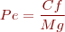
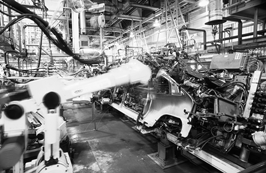
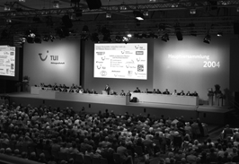

Pla d'empresa
Dins del procés de creació d’una empresa, el pla d’empresa és un document cabdal on es recull tot el projecte empresarial.
L’element essencial per donar a conèixer la nostra idea de negoci és presentar un document on es pugui llegir i estructurar aquesta idea de negoci. Per això s’elabora el pla d’empresa.
Concepte i finalitat del pla d'empresa
El pla d’empresa és una eina essencial on, mitjançant un document, s’explica tot el projecte empresarial que es vol presentar.
El pla d'empresa a més...
… és una eina de planificació i control que:
- Permet reduir considerablement el risc de fracàs.
- És una eina de formació.
- Permet determinar quines són les oportunitats de negoci i els mercats d’interès més prometedors per a l’empresa.
- Crea consciència dels obstacles que s’han de superar.
- Crea un marc de comunicació i venda.
- Permet analitzar els costos i la rendibilitat.
El pla d’empresa és un document escrit en què s’explica i es detalla el projecte d’una nova empresa, tenint en compte tots els elements rellevants, els recursos necessaris i les accions que s’han de dur a terme per a la posada en marxa del nou projecte empresarial i perquè en puguem determinar la viabilitat.
La finalitat del pla d’empresa consisteix a donar a conèixer el projecte de la nova empresa a totes aquelles persones que, d’una o una altra manera, tindran relació amb aquest nou projecte empresarial i, per aquest motiu, han de tenir els elements necessaris per saber si el projecte empresarial és viable o no.
El pla d’empresa és de gran utilitat tant internament per a la persona emprenedora o equip fundador com externament.
Internament perquè:
- Ajuda a ordenar idees.
- Serveix per planificar i pensar anticipadament en el nou negoci, per preveure on poden sorgir els problemes i tenir preparades alternatives.
- Serveix per tenir una visió global del projecte i de guia per a cada fase del procés de creació.
- Pot ser un instrument d’autoavaluació.
Externament per poder defensar el projecte davant els altres: obtenir finançament, convèncer inversors, establir acords i aliances, atraure personal clau, aconseguir condicions més favorables amb proveïdors, etc.
Estructura del pla d'empresa
El pla d’empresa és un document de gran transcendència per a l’empresa. En el pla d’empresa es defineixen les línies mestres que ha de seguir l’empresa per tal d’assolir el seus objectius; per aquesta raó els treballadors que tinguin un cert grau de responsabilitat n’han de conèixer el contingut. També pot ser una eina important a l’hora de presentar l’empresa a altres empreses (bancs, proveïdors, clients…).
El pla d’empresa es pot estructurar en els apartats següents:
- Resum.
- Persona emprenedora o equip fundador.
- Pla de màrqueting.
- Pla de producció o d’operacions.
- Pla d’organització.
- Pla juridicofiscal.
- Pla economicofinancer.
- Annexos.
Resum
El pla d’empresa començarà amb el resum.
El resum té com a objectiu facilitar la lectura i motivar les persones i entitats que han d’avaluar-lo.
El resum és un document breu, de com a màxim tres pàgines, en el qual es destaquen els aspectes més rellevants del projecte de la nova empresa.
En la secció “Adreces d’interès” del web podeu trobar informació sobre la xarxa Emprèn que presta serveis d’acompanyament i suport a les persones que volen constituir una empresa a Catalunya durant els tres primers anys de vida del negoci.
El resum ha de contenir, com a mínim, la informació següent:
- Quina és la idea de negoci.
- Quina estratègia se seguirà en els diferents apartats del pla d’empresa.
- Quins són els promotors.
- Quins són els objectius a mitjà i llarg termini.
- A quin tipus de client va dirigida la idea i quina és la mida del mercat.
- Quines són les diferències amb les empreses de la competència.
- Quina inversió es necessitarà.
- Quin és l’estat del projecte en l’actualitat.
Persona emprenedora o equip fundador
La informació sobre la persona emprenedora o els fundadors de l’empresa és important que sigui coneguda pels futurs inversors o proveïdors de l’empresa perquè fan referència a com pot ser l’empresa.
L’apartat del pla d’empresa relatiu a la persona emprenedora o equip fundador té com a objectius:
Informació sobre l'equip fundador
S’inclourà en el curriculum vitae (CV) de cadascun d’ells, en l’apartat d’annexos del pla d’empresa on es poden aplicar el model de CV Europeu (Europass).
- Presentar la persona emprenedora o els membres de l’equip fundador. En aquest apartat caldrà detallar les característiques personals de cada un dels membres de l’equip com són l’edat, la formació o l’experiència professional. També s’hauran de relacionar, en el sector de l’empresa, antecedents d’empresaris a la família, entre altres característiques.
És molt important conèixer i detallar la complementarietat de les persones que formen l’equip fundador o directiu i aquesta tasca es farà analitzant els punts forts i febles de cadascun d’ells, individualment i com a equip. - Explicar les motivacions que donen origen a la creació de l’empresa. Caldrà explicar les motivacions principals que han donat origen al projecte empresarial. Aquestes motivacions poden ser diverses: des de les inquietuds personals, el portar a terme la pròpia idea que tenim per crear una empresa, voler generar ocupació, tenir una situació d’atur que ens empeny a l’autoocupació, voler ser el propi cap, entre altres.
Pla de producció o d'operacions
El pla de producció o d’operacions és el procés on es realitza l’objecte de l’empresa, ja sigui la fabricació d’un producte o la gestió d’un servei.
Els objectius del pla de producció o d’operacions dins del pla d’empresa són:
En el procés de producció o d'operacions...
…s’ha de tenir molt en compte si és millor que els servei el produeixi o el faci la mateixa empresa o bé subcontractar-lo.
- Concretar els aspectes relacionats amb el procés de producció o detallar el nucli d’operacions que es requereixen en el cas d’una prestació de serveis.
- Descriure els recursos necessaris per dur a terme l’activitat de l’empresa respecte a locals i instal·lacions, equips tècnics, mitjans humans, matèries primeres, entre altres i veure quina és la política d’aprovisionament més adequada.
- Determinar del cost del producte/servei.
- Indicar la tecnologia aplicada, la gestió de la qualitat, les mesures de protecció en el treball i les qüestions mediambientals si és necessari.
En aquest apartat s’ha de tenir en compte els aspectes següents:
1) Procés de producció o d’operacions
Disseny del producte
Per al disseny del producte s’utilitzaran esbossos, plànols de construcció, llistes de components o materials, prototips, fórmules que es poden incloure en un dels annexos del pla d’empresa. Aquest disseny es pot fer amb eines informàtiques d’ús gratuït.
El procés de producció o d’operacions és el conjunt d’accions i decisions relatives a com es fabricarà el producte i quins recursos seran necessaris.
En el procés de producció s’han de prendre decisions relatives a:
- Quina quantitat es produirà en un interval de temps determinat?
- Quina és la capacitat productiva de l’empresa?
- Quin tipus de matèries primeres es requeriran, quantes i en quin moment?
- Quins recursos materials i humans es necessiten?
- Quina és la disponibilitat de recanvis i assistència tècnica?
- Quina tecnologia especifica s’haurà d’aplicar?
- Altres qüestions que puguin sorgir depenent del tipus de producte que s’ha de fabricar.
Prèviament a la presa de decisions esmentades s’ha de fer una de molt important que consisteix a escollir entre fabricar o comprar. La fabricació del producte per part de l’empresa assegura, normalment, la qualitat del producte en major mesura. Si s’escull l’opció de comprar el producte es requerirà menys immobilitzat i menys capital i es guanyarà en major flexibilitat a l’empresa.
En el cas d’una prestació de serveis serà necessari detallar les caracterís- tiques més rellevants de la seva prestació considerant aspectes com:
- Amb quina freqüència es prestarà el servei? (dies, setmanes, de manera esporàdica?)
- Quant temps es necessitarà per a la prestació de cada servei?
- Quin serà el grau d’autoservei requerit?
- Quina serà l’aparença interna del local/establiment on es durà a terme el servei? (ambient, grandària, distribució interior)
- Amb quin personal es compta?
2) Infraestructures, equipaments i mà d’obra. S’ha d’escollir la ubicació més adequada de la nostra empresa en funció dunes variables determinades com per exemple:
En el moment d’escollir la ubicació de l’empresa caldrà plantejar-se la possibilitat d’ubicar-se en un viver d’empreses o en un centre per a noves empreses.
- Proximitat de la clientela, de la mà d’obra i dels proveïdors.
- Disponibilitat d’infraestructures i de bones comunicacions a la zona.
- Normatives i d’altres disposicions legals (restriccions locals, subvencions).
- Altres.
Respecte al tema d’equipaments haurem de tenir en compte:
- Locals, edificis, terrenys i d’altres tipus d’instal·lacions.
- Maquinària, eines, mobiliari, equips tècnics i informàtics.
- Subministraments, mitjans de transport, mà d’obra.
Quant als recursos materials, com són el cas dels edificis o la maquinària, s’haurà de decidir si es compren o es lloguen amb les modalitats de rènting o lísing.
Respecte al tema de mà d’obra haurem de determinar:
En el pla d’organització es detallaran els aspectes relatius a l’organigrama funcional de l’empresa i a les polítiques de personal.
- Nombre necessari de persones.
- Descripció dels llocs de treball.
- Formació requerida.
3) Pla tecnològic. És un punt molt important si es tracta de noves empreses tecnològiques. És convenient d’explicar:
- Tipus de tecnologia emprada i les seves característiques més importants.
- Estat en què es troba el mercat de les tecnologies emprades i previsions futures que s’esperen.
4) Gestió d’existències: aprovisionament i emmagatzematge. La gestió d’existències és un tema fonamental per a la rendibilitat d’una empresa: quan s’han de comprar les matèries primeres i per decidir-ne la quantitat, quin és l’estoc necessari per cobrir en cada moment les necessitats del mercat, etc.
Es detallarà en aquest apartat:
- Matèries primeres, productes semielaborats o productes acabats requerits en el procés de producció o per a la seva comercialització directa.
- Proveïdors amb qui tractarem i les condicions en què ho farem, com ara els preus i les condicions que ens ofereixen, els terminis de lliurament, el volum òptim de comanda, etc.
- On emmagatzemem les existències, quin serà el seu cost i quin mètode de valoració d’existències s’utilitzarà (FIFO, preu mitjà ponderat, etc.).
5) Determinació del cost del producte/servei. S’establiran els costos previstos associats a l’activitat que desenvoluparà l’empresa, distingint entre costos fixos (que no depenen del volum de vendes realitzat) i costos variables (que varien en relació directa al número d’unitats venudes).
6) Gestió de la qualitat. La gestió de qualitat és el control que s’ha de fer per comprovar si el producte realitzat per l’empresa es troba en els nivells de qualitat requerits.
- S’indicarà si s’ha de tenir en compte la gestió de la qualitat referida al nostre producte/servei.
- Si és necessari s’identificaran les variables de mesura de la qualitat que estigui previst utilitzar i aquestes hauran de poder ser “mesurables”: fàcils d’identificar, concretes, qualificables i avaluables econòmicament.
- Es detallaran els mecanismes de control de la qualitat en el procés de producció o d’operacions, i també els possibles sistemes de millora de la qualitat relatius a:
- Accions relacionades amb el producte o servei com. per exemple, adaptar i millorar les característiques del servei.
- Accions relacionades amb el client, com seria identificar les noves necessitats del client.
- Accions relacionades amb els resultats de l’empresa, com reduir costos per exemple.
7) Salut laboral i gestió mediambiental. Les qüestions relatives a la protecció en el treball i a la gestió mediambiental requeriran la consulta de la legislació existent al respecte.
- S’indicarà quin tipus de mesures relacionades amb la protecció en el treball i, més concretament amb la seguretat i higiene, serà necessari adoptar per a l’activitat específica de l’empresa.
- S’indicarà si s’ha previst alguna mesura preventiva en matèria de medi ambient i el cost associat a aquesta, i també si l’activitat que duu a terme la nostra empresa s’ha d’acollir a alguna normativa relativa a la protecció mediambiental.
Pla d'organització
Pla d'organització
En una empresa de nova creació aquest aspecte del pla d’empresa és relatiu ja que estem començant; però no es pot obviar en qualsevol iniciativa empresarial que es dugui a terme.
L’objectiu del pla d’organització és concretar els aspectes relatius a l’estructura organitzativa i a la planificació dels recursos humans de la nova empresa.
Els dos aspectes a considerar en el pla d’organització són:
Depenent del tipus d’empresa i la seva mida l’estructura organitzativa estarà menys o més definida.
- L’estructura organitzativa. S’haurà d’especificar quines són les tasques o activitats que s’han de dur a terme en l’empresa i la quantitat d’elles i quines són les persones més preparades per fer-ho. Per això caldrà organitzar correctament les tasques a desenvolupar incidint en els aspectes següents:
- Quines persones ocuparan cada lloc de treball i quines seran les activitats concretes en funció de les necessitats globals de l’empresa i de les competències (habilitats, aptituds i actituds) de cada persona.
- A mesura que l’empresa vagi creixent s’aniran introduint noves relacions de comandament i de dependència que es representaran gràficament en un organigrama que reflecteixi les funcions i les persones encarregades de portar-les a terme.
L’organigrama haurà de ser suficientment flexible per adaptar-se a les necessitats de l’empresa.
- La planificació de recursos humans. Les polítiques de personal s’hauran de centrar en aquells aspectes de l’empresa en la seva fase inicial, és a dir, quantes persones es necessitaran per la fase inicial en el desenvolupament de l’empresa. És important especificar:
- Quantes persones i amb quines característiques d’edat, formació, entre altres, es necessitaran per dur a terme l’activitat de l’empresa.
- Com se seleccionaran i contractaran les persones de l’exterior.
- Quina formació complementària se’ls donarà.
- Quines polítiques de retribució s’utilitzaran.
- Com serà la distribució dels beneficis entre els socis, si és necessari.
S’haurà de tenir en compte no només la plantilla actual sinó preveure l’evolució de les seves dimensions a mitjà termini.
Pla juridicofiscal
L’objectiu del pla juridicofiscal és especificar la forma jurídica que haurà de tenir la nova empresa, i també tots aquells aspectes legals relatius a la seva constitució i a la seva activitat diària.
En el pla juridicofiscal es consideraran la forma jurídica de l’empresa, els aspectes legals de la seva constitució i activitat diària i també els organismes i mesures de suport a la creació d’empreses de les quals es pugui beneficiar la nostra iniciativa empresarial.
Dins d’aquest apartat del pla d’empresa es decidirà:
Les formes jurídiques més comunes són: empresari individual, societat civil, societat limitada, societat anònima i cooperativa.
- La forma jurídica i constitució legal de l’empresa. Permisos, llicències i obligacions registrals.
S’ha d’escollir el nom comercial de la nostra empresa i, una vegada s’ha fet, s’especificarà la forma jurídica adoptada, justificant les raons de l’elecció.
Fonamentalment, les raons per escollir una forma jurídica o una altra és el grau de responsabilitat a assumir per part dels socis promotors (limitada o il·limitada) i els aspectes fiscals.
Es farà un llistat dels tràmits necessaris per a la seva constitució legal sota la forma jurídica escollida i s’elaborarà un calendari per a la seva legalització. S’indicaran també els permisos, les llicències i la documentació comptable necessària per a la gestió de l’empresa. - Contractació. Es descriuran els tipus de contractes que s’han d’utilitzar en la relació entre l’empresari i els treballadors, si l’empresa n’ha de contractar, i se’n detallaran les característiques més rellevants i, sobretot, els costos laborals per a l’empresa.
- Obligacions fiscals i cobertura de responsabilitats.
Es consideraran les assegurances obligatòries que s’hagin de contractar d’acord amb el tipus d’activitat empresarial que s’estigui duent a terme i si hi ha altres tipus de cobertures no obligatòries que sigui adequat contractar.
S’han de detallar les obligacions fiscals que incideixin en el desenvolupament de l’activitat de l’empresa:- Impost sobre la renda de les persones físiques IRPF.
- Impost sobre societats IS.
- Impost sobre el valor afegit IVA.
- Altres impostos.
- Marques i patents. S’indicarà si el nostre producte/servei és susceptible d’obtenir algun tipus de protecció legal especificant-ne les característiques.
Es protegiran els símbols distintius de l’empresa legalitzant les marques, els noms comercials i els rètols d’establiment. - Organismes i mesures de suport a la creació d’empreses. Es detallaran els organismes, ja siguin públics, privats o mixtos i les mesures de suport, siguin econòmiques o no que poden beneficiar l’empresa.
Patents
Per poder protegir les invencions industrials es fan servir les patents o els models d’utilitat. Per protegir noves formes del producte s’utilitzen els models i els dibuixos industrials.
Annexos
Els Annexos han d’incloure aquella informació addicional que sigui rellevant per a la comprensió del projecte i que no s’hagi recollit dins d’aquest com poden ser:
- El calendari d’execució del pla d’empresa.
- L’anàlisi DAFO del projecte empresarial.
- L’oferta o petició de finançament.
- Altra informació complementària, com pot ser la incorporació dels CV dels membres de l’equip fundador, documents legals; documents més detallats del pla economicofinancer, llistes de clients, entre altres.
Formats del pla d'empresa
Cada pla d’empresa és diferent ja que reflecteix les característiques específiques d’un projecte empresarial concret i donarà més importància a aquells aspectes més rellevants del projecte empresarial que s’estigui desenvolupant.
La redacció del pla d’empresa ha de ser breu, concisa, realista i ben estructurada en continguts.
Per elaborar un pla d’empresa de manera correcta s’han de tenir en compte diferents recomanacions. Les més importants són les següents:
- El pla d’empresa ha de basar-se en dades recents: l’economia i l’entorn de l’empresa evoluciona de manera constant i és necessari comptar amb informació actualitzada.
- En el pla d’empresa s’han de tenir en compte tots els aspectes rellevants per al funcionament de l’empresa: els objectius, els mitjans materials, el finançament, l’organització, etc.
- El pla d’empresa ha de ser realista: No s’han de sobrevalorar les possibilitats del negoci ni infravalorar els inconvenients que tindrem.
- Ha de resultar clar i comprensible: Atès que el pla d’empresa s’ha de veure per a agents molt diferents, ha d’utilitzar el llenguatge més adequats per a tots ells.
- L’exposició ha de ser breu i directa: per facilitar la lectura i l’anàlisi del pla d’empresa a aquelles persones que l’han de veure.
- No ha de contenir errors gramaticals: ja que les faltes d’ortografia i els errors de sintaxi desacrediten els promotors de la idea i es crea una imatge desfavorable de la seva formació.
- Ha de ser flexible: ja que durant la seva redacció es pot variar a mesura que canvien les circumstàncies del pla d’empresa.
El pla d’empresa s’ha de fer en un format en què les informacions es donin:
- De manera neta i clara: és la nostra targeta de presentació.
- Amb informació de qualitat: dades reals, actuals i contrastades.
- De manera breu: amb paràgrafs curts i de fàcil lectura.
- Ben estructurat, clar i directe.
- Acompanyat de color, fotografies i gràfics, sense excedir-se.
La redacció del pla d’empresa s’ha de fer amb un document que s’aconsella que no superi les 40 pàgines inclosos els annexos, i que hauria d’estar elaborat per tots els socis o promotors del projecte perquè d’aquesta manera se’ls implica en l’inici i desenvolupament de l’empresa.
Elaboració del pla d'empresa a partir de l'estudi de viabilitat econòmica i financera
Una part important i que pot condicionar l’elaboració del pla d’empresa és l’estudi de viabilitat econòmica i financera que s’ha de fer de la idea de negoci.
L’objectiu del pla economicofinancer consisteix a concretar el pla d’inversions inicials, el pla de finançament, l’avaluació del projecte, la previsió de tresoreria i del compte de resultats, i també el càlcul del punt d’equilibri i l’elaboració del balanç de situació.
Per redactar el pla economicofinancer d’un pla d’empresa hem de tenir en compte:
- El pla d’inversions inicials.
- El pla de finançament.
- La previsió de tresoreria i el sistema de cobrament a clients i pagament a proveïdors.
- La previsió del compte de resultats.
- L’anàlisi del punt d’equilibri.
- L’avaluació del projecte.
- El balanç de situació.
El pla d'inversions inicials
El pla d’inversions inicials fa referència als recursos necessaris a invertir per poder dur a terme l’activitat de l’empresa.
L’empresa necessita invertir en l’adquisició de béns (com edificis, maquinària, elements de transport, mà d’obra, matèries primeres, mercaderies…) i serveis (com gestoria, assessoria…) per poder desenvolupar la seva activitat productiva i assolir el seu objectiu de maximitzar el seu benefici. L’activitat d’adquisició d’aquests béns es denomina inversió.
La inversió és l’adquisició de béns per poder desenvolupar l’activitat empresarial.
En la secció “Annexos” del web del mòdul hi ha un model del pla d’inversions inicials.
En el pla d’inversions es detallen les inversions, les quantitats econòmi- ques i la data en què es duran a terme per veure quin és l’inici econòmic del pla d’empresa i es fa de la manera més fiable possible per no tenir problemes d’inici que facin inviable el projecte empresarial.
El pla de finançament
El pla de finançament es refereix a la manera en què es finançaran les inversions a realitzar.
En la secció “Annexos” del web del mòdul hi ha un model del pla de finançament.
En el pla de finançament es detallen les fonts de finançament, i també els percentatges de cadascuna d’aquestes fonts i la data en què s’hauran d’obtenir.
En el cas d’empreses innovadores existeix la possibilitat de recórrer al capital risc per finançar-se.
La funció financera de l’empresa s’encarrega de l’obtenció, administració i control dels recursos financers que utilitza l’empresa. Posa en contacte l’obtenció i l’aplicació dels recursos financers.
Els recursos financers són les fonts originàries dels diners, els béns i drets a favor de l’empresa. Els diners, els béns i drets de l’empresa representen l’actiu del balanç de l’empresa i els recursos financers, el passiu.
Les fonts de finançament es poden classificar atenent a diferents criteris: segons la seva procedencia i segons la seva titularitat.
Segons la procedencia, les fonts de finançament es clasifiquen en internes i externes. Les internes són recursos generats a l’interior de l’empresa, són l’autofinançament de l’empresa. Les externes són recursos que procedeixen de l’exterior.
Segons la titularitat les fonts de finançament es classifiquen en pròpies o alienes. Les fonts pròpies són aportacions que provenen dels socis a través d’estalvis personals, de la família o dels amics. Les fonts alienes són recursos propietat de terceres persones. Han estat cedits per tercers de forma temporal amb unes dates de devolució i en alguns casos amb l’obligació de pagar un interès en concepte de remuneració (per exemple: préstecs i crèdits dels bancs i caixes i crèdits de proveïdors, lísing, facturatge, avançament de clients).
La previsió de tresoreria i el sistema de cobrament a clients i pagament a proveïdors
La previsió de tresoreria reflecteix la previsió de cobraments i pagaments que ha d’efectuar l’empresa en un període de temps, i també les necessitats de diners que tindrà l’empresa en cada moment amb la finalitat de preveure desfasaments que puguin produir-se.
En la secció “Annexos” del web del mòdul trobareu un model de previsió de tresoreria.
En aquest cas únicament es tindran en compte els fluxos que donin lloc a entrades o sortides de diners.
En la previsió de tresoreria es consideraran les condicions i els terminis de cobrament a clients com poden ser els descomptes a aplicar en els cobraments a termini.
La llei 15/2010, de 5 de juliol, de modificació de la llei 3/2004, de 29 de desembre, estableix mesures de lluita contra la morositat en les operacions comercials i modifica els terminis de pagament entre empreses. En l’actualitat el termini màxim de pagament és de 60 dies.
També es consideraran les condicions i els terminis de pagament a proveïdors, com són els descomptes a obtenir o el pagament a termini.
Previsió del compte de resultats
El compte de resultats expressa el benefici d’un període determinat a partir de la diferència entre els ingressos i els costos produïts en el període esmentat.
En la secció “Annexos” del web trobareu un model de la previsió del compte de resultats.
El benefici s’obté de la diferència entre ingressos i costos en un període determinat i s’haurà de tenir en compte si el benefici és abans o després d’haver pagat impostos ja que la situació pot canviar substancialment.
Anàlisi del punt d'equilibri
El concepte de punt d’equilibri és molt important per a la nova empresa, tant des del punt de vista de l’emprenedor com per als possibles inversors.
El punt d’equilibri és aquell volum de vendes per al qual el benefici és nul.
El punt d’equilibri expressa el nombre d’unitats que una empresa ha de vendre per tal de cobrir els costos.
La fórmula del punt d’equilibri és:

A on:
- : Nombre d’unitats per assolir el punt d’equilibri
- : Costos fixos
- : Marge brut de contribució
Així:
- Els costos fixos: són aquells costos independents del nivell d’actuació de l’empresa, és a dir, aquells costos que es mantenen tant si es produeix com si no, i també independentment de la quantitat produïda. Exemples de costos fixos són els salaris dels treballadors o el lloguer.
- Els costos variables: són aquells costos que varien en funció del nivell d’activitat de l’empresa, és a dir, del nombre d’unitats venudes. Exemples de costos variables són la compra de matèries primeres.
- El marge brut de contribució: és la diferència entre el preu de venda unitari i els costos variables unitaris.
Avaluació del projecte
L’avaluació del projecte es produeix a través de les dades econòmiques que s’han anat reflectint en els diferents documents que configuren el pla economicofinancer.
En el cas de projectes d’inversió complexos per a grans inversions o inversions amb risc es poden aplicar tècniques d’avaluació i selecció d’inversions.
Existexen dues tipologies de mètodes de selecció d’inversions: estàtics i dinàmics.
Els mètodes estàtics es basen en el fet de que els valor dels diners al llarg del temps és constant. Els mètodes dinàmics tenen en compte que el valor dels diners varia segons el moment en que es produeixen els fluxos de caixa.
El mètode estàtic més utilitzat és el pay-back o termini de recuperació consistent en calcular quant de temps triga en recuperar-se una inversió.
El mètodes dinàmics més utilitzats són el VAN (valor actual net) i el TIR (taxa de rendiment intern).
VAN (valor actual net)
El VAN calcula el valor actual net dels fluxos de caixa generats pel projecte i mesura la rendibilitat de les inversions realitzades.
Si el resultat del VAN és major de zero significa que el projecte és rendible. Si el resultat del VAN és menor de zero el projecte no és rendible.
El VAN és la suma de valors positius (ingressos) i negatius (costos) que es produeixen en diferents moments i té en compte el valor del diner en el temps. Com que el valor del diner varia amb el temps és necessari descomptar de cada període un percentatge anual estimat com a valor perdut pel diner durant el període d’inversió. Una vegada descomptat aquest percentatge es poden sumar els fluxos positius i negatius.
TIR (taxa interna de rendibilitat)
La taxa interna de rendibilitat és el valor de la taxa d’interès o descompte que iguala el VAN a zero, és a dir, que iguala els fluxos econòmics futurs amb el valor de la inversió inicial.
Per tal que un projecte sigui rendible el TIR > i sent i el tipus d’interès del passiu de l’empresa.
Balanç de situació
El balanç de situació expressa la situació patrimonial de l’empresa en un moment determinat de l’empresa en el temps i ve determinada per l’actiu, el passiu i el patrimoni net.
L’actiu agrupa els elements patrimonials que representen béns i drets de propietat de l’empresa.
El passiu està format pels elements patrimonials que representen deutes o obligacions pendents de pagament amb persones o entitats alienes.
El net patrimonial conté el valor dels fons que aporten la persona o les persones fundadores o els accionistes i els recursos generats no distribuïts.
Actiu = Passiu + Net
Elecció de la forma jurídica, tràmits administratius i gestió d'ajuts i subvencions
Una diferenciació que cal tenir present és la condició de persona que atribueix l’ordenament jurídic als éssers humans, però també a les organitzacions. D’aquesta manera, diferenciem entre persona física i persona jurídica.
Per persona física s’entén qualsevol persona que és susceptible d’adquirir drets i contreure obligacions. Per persona jurídica s’entén l’entitat a la qual l’ordenament jurídic atribueix la condició de persona de manera que té capacitat d’adquirir drets i contreure obligacions.
D’aquesta manera es poden dissociar les responsabilitats de la persona jurídica (empresa) i, per exemple, un propietari de l’empresa (persona física) que tingui accions. Així, doncs, quan l’empresa té personalitat jurídica pròpia -independent de les persones físiques que en són propietàries- pot limitar la responsabilitat que recau sobre els propietaris, que, segons el tipus de societat, poden no haver de respondre dels deutes originats per la companyia amb els seus patrimonis.
L’empresa és la unitat econòmica encarregada de combinar els factors o recursos productius (treball, capital i recursos naturals) per produir béns i serveis que després es venen en el mercat.
En la taula es pot veure la classificació de les empreses des del punt de vista de la seva forma jurídica.
| Empresa individual | |||
| Societats | Mercantils | Societat col·lectiva | |
| Societat comanditària | Simple | ||
| Per accions | |||
| Societat de responsabilitat limitada | |||
| Societat limitada nova empresa | |||
| Societat anònima | |||
| Societat laboral | |||
| Societat cooperativa catalana | |||
| No mercantils | Comunitats de béns | ||
| Societat civil | |||
Legislació
El dia 3 de juliol de 2010 es va publicar al Butlletí Oficial de l’Estat el Reial Decret Legislatiu 1 / 2010, de 2 de juliol, pel qual s’aprova el text refós de la Llei de societats de capital. En l’article 1 d’aquesta llei s’estableix que “Són societats de capital: la societat de responsabilitat limitada, la societat anònima i la societat comanditària per accions ”.
El que hem exposat en aquesta unitat segueix sent vàlid.
La llei va entrar en vigor l’1 de setembre de 2010, i deroga a les quals fins ara han regit, en concret la secció 4a del títol I del llibre II del Codi de Comerç (relatiu a les societats comanditàries per accions), la Llei de Societats Anònimes i la Llei de Societats de Responsabilitat Limitada.
En la taula es pot veure un quadre comparatiu de les societats mercantils i les societats mercantils especials.
| Forma jurídica | Socis mínims | Capital mínim (€) | Responsabilitat | Fiscalitat |
|---|---|---|---|---|
| SA, societat anònima | 1 | 60.000 | Limitada | IS, impost societats |
| SL o SRL, societat limitada, SL unipersonal | 2 1 | 3.000 | Limitada | IS, impost societats |
| Societat limitada nova empresa | 1 | 3.000 | Limitada | IS, impost societats |
| Societat col·lectiva | 2 | 0 | Il·limitada | IS, impost societats |
| Comanditària simple | 1 col. 1 com. | 0 | Socis comanditaris: limitada socis col·lectius: il·limitada | IS, impost societats |
| Comanditària per accions | 1 col. 1 com. | 60.000 | Socis comanditaris: limitada socis col·lectius: il·limitada | IS, impost societats |
| Societat cooperativa | 3 treb. | Mínim fixat en els estatuts | Si s’indica | IS, impost societats |
| SAL, societat anònima laboral | 3 | 60.000 | Limitada | IS, impost societats |
| SLL, societat limitada laboral | 3 treb. | 3.000 | Limitada | IS, impost societats |
| Societat de garantia recíproca | 150 | 10.000.000 | Limitada | IS, impost societats |
| Agrupació d’interès econòmic | 2 | 0 | Limitada | IS, impost societats |
| Societat d’inversió mobiliària | Mínim fixat en els estatuts | Limitada | IS, impost societats |
Empresa individual
L’empresa individual és una organització de capital i treball encaminada a la producció de béns o serveis per al mercat, exercida per una persona en nom propi, o per mitjà d’un representant, i que exerceix una activitat constitutiva d’empresa.
El capital que ha d’aportar l’empresari individual no té un mínim legal. D’acord amb la nostra legislació, poden ser empresaris:
- Qualsevol persona major d’edat, amb lliure disposició dels seus béns.
- Els menors d’edat emancipats que tinguin lliure disposició dels seus béns.
- Els menors d’edat, mitjançant els seus representants legals.
L’empresari individual exerceix unes activitats econòmiques de les quals és responsable com a titular de l’empresa. Per aquest motiu, no hi ha separació entre el patrimoni de l’empresa i el patrimoni de l’empresari, és a dir, l’empresari respondrà amb tot el seu patrimoni present i futur de les obligacions que contregui amb l’empresa.
Segons l’article 1911 del Codi civil, a l’empresa individual “Tothom respon amb el seus béns presents I futurs”.
L’empresari individual no té l’obligació d’inscriure’s al registre mercantil, per la qual cosa no existeix responsabilitat en aquest punt ja que la inscripció és voluntària.
Societats
La societat és una alternativa a l’empresa individual ja que moltes vegades una empresa necessita una conjunció de voluntats per poder desenvolupar-se. Algunes societats poden presentar avantatges econòmics i legals que faciliten la constitució d’empreses noves. Aquests avantatges poden anar des de la separació del patrimoni personal i del patrimoni empresarial dels membres de la societat fins a una facilitat més gran per transmetre el capital de la societat. Les societats es classifiquen en dos grans grups: mercantils i no mercantils.
Societats mercantils
El Codi de comerç no dóna una definició de societat mercantil i defineix elcontracte de companyia de la manera següent: “Dues o més persones s’obliguen a posar en fons comú béns, indústria o alguna d’aquestes coses per obtenir un lucre, i serà mercantil qualsevol que sigui la seva classe, sempre que s’hagi constituït d’acord amb les disposicions de l’esmentat codi.”
La societat cooperativa catalana s’estudia en un altre apartat, com una societat mercantil amb característiques particulars.
D’acord amb aquesta definició, podem dir que seran mercantils les societats que adoptin una de les formes previstes en el Codi de comerç o en leslleis especials.
1) Societat col·lectiva
La legislació aplicable a les societats col·lectives s’estableix en els articles 125 al 144 del Codi de comerç.
En les societats col·lectives la personalitat del soci és l’avantatge principal i el caràcter de soci és intransmissible. No hi ha possibilitat de transmissió de la qualitat de soci sense el consentiment dels altres. L’activitat de la societat ha de ser necessàriament mercantil.
Els socis, que han de ser un mínim de dos, participen dels beneficis de la manera que s’hagi establert en la constitució de la societat; la més habitual és participar en proporció a les aportacions fetes per cada soci.
- Característiques. Les característiques principals de la societat col·lec- tiva són les següents:
- La societat col·lectiva ha de portar el nom de tots els seus socis, d’alguns o d’un de sol. En els dos últims casos, s’ha d’afegir “i cia.” al nom de la societat, i sempre s’haurà d’afegir l’abreviatura SC o les paraules societat col·lectiva.
- No existeix un mínim legal respecte a l’aportació de capital social.
- La responsabilitat de cada soci pels deutes que puguin considerar-se deutes de la societat és personal, il·limitada i solidària de tots els socis. Aquesta norma no pot ser alterada per un pacte entre els socis.
- A més, tots els socis poden participar en la gestió social amb determinades condicions. Qualsevol soci pot ser, en principi, administrador de la societat, però només podran representar la societat aquells que han estat autoritzats per usar la signatura social mitjançant el nomenament o poder corresponent.
- Classes de socis. En una societat col·lectiva els socis poden ser de dues menes: col·lectius i industrials.
- Socis col·lectius: els socis col·lectius són els socis capitalistes, és a dir, que aporten treball i capital, gestionen la societat i participen en els guanys.
- Socis industrials: els socis industrials només aporten el treball personal. No poden participar en la gestió de la societat, excepte pacte en contra. Participen en els guanys de la societat. No participen en les pèrdues, excepte pacte exprés, segons allò que estableix el Codi de comerç. Al soci industrial, se li assignaran els mateixos beneficis que al soci capitalista de menor participació en cas que el contracte social guardi silenci sobre aquest tema.
2) Societat comanditària
Responsabilitat personal
Responsabilitat personal vol dir que cada soci respon amb els seus béns dels deutes de la societat; il·limitada vol dir que el soci respon amb els seus béns presents i futurs; i solidària vol dir que cada soci respon del total del deute de la societat.
La societat comanditària és una forma intermèdia entre les societats personalistes i les societats capitalistes, la característica essencial de la qual és l’existència de dos tipus de socis: els socis col·lectius i els socis comanditaris. Els socis col·lectius responen amb tots els seus béns dels resultats de les operacions socials i els comanditaris responen només amb l’aportació de capital feta a l’empresa.
- Classes de socis. En la societat comanditària el socis poden ser de dos tipus:
- Socis col·lectius: són aquells que aporten a la societat comanditària treball i capital. S’encarreguen de gestionar i administrar la societat. Els socis col·lectius queden obligats personalment i solidàriament a pagar els deutes de la societat i la seva responsabilitat és solidària, il·limitada i subsidiària.
- Socis comanditaris: aquests socis no s’encarreguen de la gestió de la societat. En la raó social no es poden incloure els noms dels socis comanditaris. La responsabilitat dels socis comanditaris envers les obligacions i pèrdues de la societat es limita als fons que aquests hi hagin aportat.
- Tipus de societats comanditàries. Les societats comanditàries poden ser de dos tipus: simple i per accions. En la taula es mostren les característiques principals d’aquests tipus de societats.
| Societat comanditària simple | Societat comanditària per accions | |
|---|---|---|
| Nom social | Està formada pels noms dels socis col·lectius o per una part d’ells. En aquest últim cas, s’ha d’afegir al nom “i companyia” i, en tots els casos, les paraules societat en comandita o la seva abreviatura S, en c. o S. Com. | Està formada pels noms dels socis col·lectius o per una part d’ells. En aquest últim cas, s’ha d’afegir al nom “i companyia” i, en tots els casos, les paraules societat en comandita o la seva abreviatura S, en c. o S. Com. per accions. |
| Nombre de socis | El nombre mínim de socis serà dos. | El nombre mínim de socis és dos. |
| Capital social | No s’exigeix cap capital mínim. | El capital social mínim és de 60.000 euros. |
| Responsabilitat dels socis | Els socis col·lectius responen il·limitadament i els socis comanditaris limitadament dels deutes de la societat. | Un dels socis que ha de ser col·lectiu respon de manera il·limitada. |
| Gestió | Només els socis col·lectius poden gestionar i administrar la societat. Si els socis comanditaris fessin aquesta tasca respondrien de manera il·limitada dels deutes i pèrdues socials. | Un dels socis almenys s’encarregarà de l’administració de la societat. |
3) Societat de responsabilitat limitada
- 
- Un exemple de societat que necessita capital per funcionar podria ser una societat de responsabilitat limitada.
La societat de responsabilitat limitada és una societat mercantil amb un capital no inferior a 3.000 euros, totalment desemborsat, i dividit en participacions acumulables i indivisibles que no es poden incorporar a títols negociables ni anomenar-se accions. Els socis estan exempts de responsabilitat personal pels deutes socials.
Constitució i inscripció
La societat de responsabilitat limitada es constituirà mitjançant escriptura pública, que incorporarà els estatuts socials redactats pels partícips i que s’haurà d’inscriure en el Registre Mercantil. La societat de responsabilitat limitada adquireix personalitat jurídica amb la inscripció en el Registre Mercantil.
- Característiques. Les principals característiques de la societat de responsabilitat limitada són les següents:
- La seva denominació no podrà ser idèntica a la d’altres societats i amb el nom haurà de figurar la indicació de societat de responsabilitat limitada o societat limitada o les seves sigles SRL o SL.
- És una societat que té caràcter mercantil independentment del seu objecte social.
- La societat respon amb tot el seu patrimoni i el soci només arrisca l’import de la seva aportació a la societat.
- La transmissió de les participacions de la societat només és lliure entre els socis i els seus cònjuges i també entre els seus ascendents i descendents, i la transmissió a tercers està sotmesa a limitacions fixades en els estatuts o en la llei.
- Òrgans de govern. La condició de soci en les societats de responsabilitat limitada depèn de la tinença de les participacions, que és una de les parts en què es divideix el capital social. Les participacions socials són acumulables i indivisibles. Hi pot haver un únic soci.
En una societat limitada hi pot haver els òrgans de govern següents:- Administradors. L’administració de la societat es podrà confiar a un administrador únic, a diversos administradors que actuen de manera solidària o a un consell d’administració. Qualsevol acord de modificació en la manera d’organitzar l’administració de la societat implica la modificació dels estatuts i es consignarà en escriptura pública. Després s’inscriurà en el registre mercantil.
La competència per nomenar l’administrador correspon exclusivament a la junta general i per ser nomenat administrador no es requerirà la condició de soci. - Junta general. Els socis, reunits en la junta general, decidiran per majoria els assumptes que exposi la junta. Els acords socials s’adoptaran per majoria de vots vàlidament emesos, sempre que representin, almenys, 1/3 dels vots corresponents a les participacions socials en què es divideix el capital social.
Podeu trobar més informació sobre els estatuts d’una societat limitada a la secció “Annexos” del web del crèdit.
Tots els socis queden sotmesos als acords de la junta general. Aquesta serà convocada pels administradors i, si escau, pels liquidadors de la societat.
Tots els acords socials hauran de constar en acta. L’acta tindrà força executiva a partir de la data d’aprovació.
Llei 7/2003
La legislació vigent sobre societat limitada nova empresa és la Llei 7/2003, d’1 d’abril, de la societat limitada nova empresa.
4) Societat limitada nova empresa
La Llei 7/2003 de societat limitada nova empresa (SLNE) obre la possibilitat de crear societats en un dia, mitjançant un document únic electrònic, i amb una sola compareixença davant el notari, el qual inscriurà l’escriptura de constitució en el registre mercantil corresponent al domicili social mitjançant l’ús de la seva signatura electrònica, sense necessitat d’anar a cap oficina de l’Administració.
La reforma de la legislació mercantil té com a objectiu estimular la creació d’empreses de petita dimensió de manera ràpida i senzilla.
El nou tipus social es denomina societat limitada nova empresa i s’hi poden acollir microempreses i autònoms que, amb la simplificació dels tràmits, podran constituir-se emplenant només un únic formulari.
Règim jurídic de l'SLNE
El règim jurídic de l’SLNE està regulat per la Llei 2/1995, de 23 de març, de societats de responsabilitat limitada. A l’esmentada llei s’afegeix un nou capítol on es regulen les singularitats de la nova empresa. Si no hi ha regulació, s’aplica la Llei de societats de responsabilitat limitada.
El requisit necessari per adoptar la societat limitada nova empresa és que només poden ser socis les persones físiques, sense superar el nombre de cinc en el moment de la constitució. Si l’empresa està formada per un sol soci, aquest no podrà ser soci únic d’una altra societat limitada nova empresa.
La denominació social estarà formada pel nom i dos cognoms d’un dels socis fundadors, seguit d’un codi alfanumèric que permeti la identificació de la societat d’una manera única i inequívoca.
El capital social en aquest tipus de societat no haurà de ser inferior a 3.000 euros ni més gran de 120.000 euros i, en tot cas, la xifra del capital mínim indicat només podrà ser desemborsada mitjançant aportacions dineràries.
Denominació de l'SLNE
En la denominació de la companyia, haurà de figurar necessàriament la indicació societat limitada nova empresa o la sigla corresponent SLNE.
La societat nova empresa tindrà com a objecte social una sèrie d’activitats generals i en els estatuts es transcriurà literalment allò que correspongui. Aquest règim de determinació de l’objecte social s’estableix amb el propòsit de permetre una major fluïdesa de les activitats econòmiques i, d’aquesta manera, evitar les modificacions estatutàries contínues que són fruit del canvi constant que pateixen les petites empreses durant els seus inicis.
Comptabilitat de les SLNE
Respecte a l’aspecte comptable, la llei preveu una comptabilitat simplificada d’acord amb les característiques d’aquestes empreses, reunint només en un sol document tots els documents financers.
Una característica particular d’aquestes empreses són els beneficis fiscals als quals es poden acollir; per exemple, podran ajornar el pagament d’impostos durant els dos primers anys de la seva activitat. Així, l’empresa començarà a liquidar la factura acumulada a partir del tercer any d’activitat i de manera fraccionada, després d’haver negociat la manera de pagament amb l’Agència Tributària.
5) Societat anònima
La legislació aplicable....
… a la societat anònima està regulada en el Codi de comerç, en el Reial decret 1564/1989, en el Reial decret 1597/1989, en la Llei 19/1989 i en la Llei 2/1995.
La societat anònima, independentment del seu objecte, tindrà caràcter mercantil. El capital està dividit en accions i el mínim exigit per a la seva constitució és de 60.000 euros, i la responsabilitat dels socis està limitada per l’aportació que realitzen; per això els socis no responen dels deutes socials amb el seu patrimoni personal.
a) Característiques. La denominació és lliure, però no podrà ser idèntica a la d’altres societats inscrites, i amb el nom haurà de figurar la indicacióde societat anònima o SA.
Constitució i inscripció
La societat anònima haurà de constituir-se mitjançant escriptura pública i inscriure’s en el Registre Mercantil en el termini de dos mesos des del seu atorgament. La seva constitució es publicarà en el Butlletí Oficial del Registre Mercantil. Les societats anònimes unipersonals estan obligades a fer constar el nom de l’únic accionista.
Les característiques més importants de les societats anònimes són:
- Són societats capitalistes i tenen caràcter mercantil, en les quals no importa la identitat dels socis sinó solament l’aportació realitzada a l’empresa.
- El capital de la societat està dividit en accions i haurà d’estar subscrit i desemborsat almenys en una quarta part, és a dir, en un 25% en el moment de la constitució. Els socis de la societat anònima no respondran amb el seu patrimoni personal dels deutes socials.
- La societat s’haurà de constituir mitjançant escriptura pública i inscriure’s en el registre mercantil. Amb la inscripció en el registre, la societat adquirirà personalitat jurídica pròpia.
Aportacions no dineràries
Per les aportacions no dineràries s’exigeix un informe elaborat per experts independents, designats pel registrador mercantil, en què s’incorporin com a annex el valor, contingut, naturalesa i procediment pel qual s’han efectuat les aportacions. Aquest informe s’unirà a l’escriptura.
b) Aportacions a la societat. Les aportacions a la societat anònima podran ser dineràries i no dineràries. En els estatuts de la societat es podran establir prestacions diferents de les aportacions de capital sense que puguin integrar el capital de la societat. Les aportacions patrimonials de béns o drets seran susceptibles de valoració econòmica.
Accions nominatives
Seran nominatives obligatòriament quan el seu import no hagi estat totalment desemborsat, hi hagi restriccions estatutàries per a la seva transmissibilitat, quan comportin prestacions accessòries o quan ho exigeixin disposicions especials.
c) Les accions. L’acció confereix al seu titular la condició de soci i, amb aquesta, el dret a participar en el repartiment dels guanys socials i en el patrimoni que resulti de la liquidació, i també al dret de subscripció preferent en l’emissió de noves accions. La condició d’accionista implica, a més, el dret de participació en els beneficis. Aquesta participació es denomina dividend.
Accions al portador
Les accions seran al portador quan no consti el nom del titular. En aquest cas, el capital estarà totalment desemborsat. Els títols estaran numerats correlativament i s’estendran en llibres talonari.
L’accionista també adquireix el dret a assistir i a ser informat, i el dret de compra preferent de noves accions en cas d’ampliació de la societat. Les accions estaran representades per títols que podran ser nominatius, al portador o sense vot.
d) Òrgans de govern. Els òrgans de govern de la societat anònima són:
- Junta general. Els accionistes constituïts en junta general decidiran per majoria els assumptes propis de la competència de la junta; és a dir, per prendre acords, els socis s’han de constituir en junta necessàriament.
Les juntes generals podran ser ordinàries o extraordinàries i hauran de ser convocades pels administradors de la societat.
Tots els socis queden sotmesos als acords de la junta general. Sempre s’aixecarà acta de la junta i els administradors poden requerir la presència del notari per donar fe dels acords de la junta. Els accionistes poden exercir el dret d’assistència i vot en les juntes per ells mateixos o per mitjà d’un representant.
- 
- Reunió ordinària de tots els accionistes d'una societat
- Administradors. El nomenament dels administradors i la determinació del seu nombre, quan els estatuts estableixin solament el màxim i el mínim, correspon a la junta general. La junta general, a més, podrà fixar les garanties que els administradors haurien de prestar o rellevarlos d’aquesta prestació, en cas que no hi hagi disposició estatutària.
Les funcions dels administradors són la gestió i representació de la societat. Per ser administrador no s’exigeix la qualitat d’accionista, excepte quan els estatuts ho requereixin.
- Consell d’administració. Quan l’administració es dóna conjuntament a més de dues persones es constitueix el consell d’administració. Els membres del consell d’administració s’elegiran per votació i el seu nombre no serà inferior a tres persones.
Societat anònima europea
La societat anònima europea que tingui el seu domicili a Espanya es regirà per allò que estableix el Reglament (CE) 2157/2001 del Consell, de 8 d’octubre de 2001; per les disposicions d’aquest capítol i per la llei que reguli la implicació dels treballadors en les societats anònimes europees. La societat anònima europea haurà de fixar el seu domicili a Espanya quan la seva administració central es trobi dins del territori espanyol.
Els acords del consell d’administració s’adopten per majoria absoluta dels membres del consell que assisteixen a la sessió, que haurà de ser convocada pel president o per aquella persona que faci les seves funcions.
6) Societat laboral
La finalitat de les societats laborals és aconseguir nous mètodes de creació d’ocupació, fomentant la participació dels treballadors en l’empresa, d’acord amb el mandat recollit en l’article 129.2 de la Constitució.
Art. 129.2 de la Constitució espanyola
“Els poders públics han de promoure eficaçment les diverses formes de participació a l’empresa i han de fomentar, mitjançant una legislació adequada, les societats cooperatives. També han d’establir els mitjans que facilitin l’accés dels treballadors a la propietat dels mitjans de producció.”
Les societats laborals anònimes o de responsabilitat limitada són aquelles en les quals la majoria del capital social és propietat de treballadors que
presten serveis retribuïts en forma personal i directa i la relació de la qual és per temps indefinit; sota aquesta circumstància podran obtenir la qualificació de societat laboral.
Els socis només respondran dels deutes socials fins al límit de les seves aportacions.
En les societats laborals...
… cap soci no podrà tenir accions o participacions socials que representin més de la tercera part del capital social. No obstant aquest fet, podran participar en el capital fins a un 49% l’Estat, comunitats autònomes, entitats locals o les societats públiques participades per qualsevol d’aquestes institucions. Les associacions o entitats sense ànim de lucre podran tenir el mateix percentatge.
- Característiques. Les societats laborals són societats mercantils. En la denominació de la societat haurien de figurar la indicació societat anònima laboral o societat de responsabilitat limitada laboral o les seves sigles SAL o SLL, segons convingui.
El capital social estarà dividit en accions nominatives o en participacions socials. El seu funcionament es regula, en general, per allò que estableixen les lleis de societats anònimes i de societats de responsabilitat limitada.
El capital social mínim per constituir una societat laboral és de 3.000 euros si es tracta d’una societat limitada laboral. El capital social estarà dividit en participacions socials que s’hauran d’haver desemborsat totalment en el moment de la constitució de la societat.
Si es tracta d’una societat anònima laboral, el capital mínim és de 60.000 euros, estarà dividit en accions nominatives i s’haurà d’haver desemborsat almenys en un 25% en el moment de la constitució de la societat. - Membres de la societat laboral. Els membres de la societat laboral poden ser de tres tipus.
- Socis treballadors: són propietaris almenys del 51% del capital de la societat i hi estan vinculats mitjançant un contracte indefinit i a jornada completa.
- Socis no treballadors: són propietaris d’accions o participacions, però no estan vinculats a l’empresa mitjançant una relació laboral. Poden ser persones físiques o jurídiques.
- Treballadors assalariats: en les societats laborals hi pot haver, sense adquirir la condició de soci, treballadors assalariats per temps indefinit que no tinguin subscrites i desemborsades accions o participacions socials de la societat.
Pèrdua de la condició de societat laboral
Són causes de pèrdua de la condició de societat laboral el fet que els treballadors amb contracte indefinit treballin més del 15% d’hores respecte a les hores treballades per socis treballadors (25% si no són menys de 25 socis); el fet que algun soci excedeixi la seva participació en més d’una tercera part del capital social; la falta de dotació, la dotació insuficient o l’aplicació indeguda del fons especial de reserva.
El nombre d’hores per any treballades pels treballadors assalariats no podrà superar el 15% del total d’hores per any treballades pels socis treballadors. Si la societat té menys de 25 socis treballadors, aquest percentatge no podrà ser superior al 25% del total d’hores per any treballades pels socis treballadors.
La societat laboral haurà de constituir-se mitjançant escriptura pública i inscriure’s en el registre mercantil. Des del moment de la seva inscripció tindrà personalitat jurídica pròpia.
Les societats laborals, a més de les reserves legals o estatutàries que corresponguin, estan obligades a constituir un fons especial de reserva dotat amb el 10% dels beneficis líquids de cada exercici. Aquest fons especial només es podrà destinar a la compensació de pèrdues en el cas que no hi hagi altres reserves disponibles suficients per a aquest fi.
Societat cooperativa catalana
La regulació de la societat cooperativa catalana...
… es basa en les normes següents:
- Llei del Parlament de Catalunya 18/2002, de 5 de juliol, de cooperatives.
- Decret 203/2003, d’1 d’agost, que regula l’estructura i el funcionament del Registre General de Cooperatives de Catalunya.
Les cooperatives són societats, amb plena autonomia i sota els principis de lliure adhesió i baixa voluntària, amb capital variable i gestió democràtica, que associen persones físiques o jurídiques que tenen necessitats o interessos socioeconòmics comuns, amb el propòsit de millorar la situació econòmica i social dels seus components i de l’entorn comunitari, realitzant una activitat empresarial de base col·lectiva.
El servei mutu i l’aportació pecuniària dels seus membres permeten complir una funció que tendeix a millorar les relacions humanes i repartir els resultats econòmics als socis una vegada atesos els fons comunitaris, en funció de l’activitat cooperativitzada que duen a terme.
- Logotip de la societat cooperativa catalana de consums i serveis de Vallpineda
La denominació d’una societat cooperativa és lliure, però no podrà ser idèntica a la d’una altra societat cooperativa, i amb el nom haurà de figurar la indicació de societat cooperativa catalana o la sigla corresponent SCC o l’abreviatura S. Coop. C.; el règim de responsabilitat dels socis pot ser de responsabilitat il·limitada (SCCI) o limitada (SCCL). En tota la documentació s’han d’incloure les dades d’inscripció en el Registre.
a) Característiques. Les principals característiques de les societats cooperatives són les següents:
- El capital d’una cooperativa és variable i pot augmentar o disminuir segons el nombre de socis. Els socis no respondran personalment dels deutes socials.
- La societat cooperativa no pot dependre de cap organització política, religiosa o sindicat, únicament poden ser associats aquelles persones que hi treballen.
Socis
En les cooperatives de primer grau poden ser socis les persones físiques o jurídiques, públiques o privades, sempre que l’objecte social d’aquestes no sigui incompatible amb el de la cooperativa ni amb els principis cooperatius. En les cooperatives de segon o ulterior grau poden ser socis les societats cooperatives i altres entitats socials.
b) Classes. Les cooperatives es classifiquen en dos grups: cooperatives deprimer grau i cooperatives de segon grau.
En les cooperatives de primer grau cada soci tindrà dret a un vot, amb independència de la seva aportació. En les cooperatives de segon grau els estatuts podran establir un sistema de vot múltiple, proporcional al nombre de socis de cada cooperativa o en funció de la participació de la cooperativa de primer grau en les activitats de la de grau superior.
Art. 92. Classificació (Llei 182002, de 5 de juliol)
Les cooperatives de primer grau es classifiquen segons els tipus següents:
- agràries
- marítimes, fluvials i lacustres
- d’assegurances
- de consumidors i usuaris
- de crèdit
- d’ensenyament
- d’habitatges
- sanitàries
- de serveis
- de treball associat
- mixtes
Els interventors de comptes...
… també són òrgans de la societat cooperativa catalanaL’assemblea general ha de triar, entre els socis, d’un a tres interventors de comptes i, si ho regulen els estatuts, les persones suplents.
c) Òrgans de govern de la societat cooperativa. Dins d’una societat cooperativa podem distingir quatre òrgans de govern. Els dos més importants són:
- L’assemblea general. L’assemblea general és l’òrgan suprem d’expressió de la voluntat social i la constitueix la reunió dels socis per deliberar i prendre acords. L’assemblea general pot debatre i decidir sobre qualsevol matèria de la cooperativa que no hagi estat atribuïda expressament a un altre òrgan social. Té competències per a la modificació dels estatuts i l’aprovació o modificació, si escau, dels reglaments del seu règim interior.
Els acords de l’assemblea obliguen tots els socis. L’assemblea adopta els acords per majoria simple del nombre de vots socials dels assistents, excepte en els assumptes en els quals els estatuts estableixin un altre tipus de majoria. Aquestes assemblees generals poden ser ordinàries o extraordinàries.
El comitè de recursos és un òrgan...
… que tramitarà i resoldrà els recursos contra les sancions als socis i assumirà altres funcions que els estatuts determinin.
- El consell rector. El consell rector és l’òrgan de representació i govern de la societat que gestiona l’empresa i exerceix, quan convé, el control permanent i directe de la gestió de la direcció. Té competència per establir les directrius generals d’actuació, amb subordinació a la política fixada per l’assemblea general.
El nombre de membres titulars del consell rector no podrà ser inferior a tres i, en tot cas, hi haurà els càrrecs de president, vicepresident i secretari. Quan els estatuts ho prevegin hi podrà haver altres càrrecs.
Societats no mercantils
L’empresari individual es pot associar col·lectivament mitjançant societats civils i comunitats de béns. Aquestes formes d’associació es regulen en el Codi civil i no donen lloc a una personalitat jurídica diferent de la dels seus socis.
1) Comunitat de béns
La comunitat de béns està regulada en els articles 392 a 406 del Codi civil.
Hi ha comunitat de béns quan la propietat d’una cosa o un dret pertany proindivís a diverses persones.
a) Característiques. Les principals característiques de la comunitat de béns són les següents:
- Les comunitats de béns es regiran pel Codi civil i el seu objecte pot ser la posada en comú d’un patrimoni per crear una empresa i repartir les pèrdues i els guanys.
- La denominació de la comunitat no està regulada i per això podrà adoptar qualsevol nom acompanyat de les paraules comunitat de bénso CB.
- No hi ha exigència d’una aportació mínima obligatòria a la comunitat.
- Els comuners respondran davant de tercers de manera il·limitada.
- Es constituirà mitjançant escriptura pública quan s’aportin béns immobles.
No té personalitat jurídica pròpia i les participacions corresponents als comuners es presumiran iguals mentre no es provi el contrari. Cada comuner participarà en les pèrdues i els guanys en proporció a les seves quotes de participació respectives.
b) Obligacions dels socis. Cada partícip es podrà servir de les coses comunes, sempre que en disposi d’acord amb la seva destinació i no perjudiqui l’interès de la comunitat i no impedeixi utilitzar-les als altres copartícips.
Es pot nomenar un o diversos administradors de la comunitat de béns i, si no es fa, l’administració serà exercida per qualsevol dels partícips.
Qualsevol copropietari pot obligar els altres copartícips a contribuir a les despeses de la cosa comuna o del dret comú.
c) Responsabilitat. Els partícips respondran davant la comunitat dels danys i perjudicis ocasionats amb culpa.
Respecte a terceres persones, la comunitat respondrà amb tots els seus béns i, si aquests no són suficients, els comuners respondran amb el seu patrimoni personal d’acord amb els pactes.
- L'empresa Bólidos, SCP, s'ha constituït en societat civil particular.
2) Societat civil
Article 1665 CC
“La societat civil és un contracte pel qual dues o més persones s’obliguen a posar en comú diners, béns o indústria, amb ànim de partir els guanys entre ells.”
La societat civil és un contracte personalíssim basat en la confiança. El Codi civil estableix que la societat civil es podrà constituir en qualsevol forma, amb l’excepció que s’hi aportin béns immobles o drets reals, situació en què serà necessari l’atorgament d’escriptura pública.
La denominació de la societat civil privada és lliure, seguida de societat civil privada o bé SCP.
Responsabilitat mancomunada
La responsabilitat mancomunada implica que un tercer només pot demanar al soci, en cas de deute de la societat, la part corresponent o aportació social d’aquest.
- Tipus de societats civils. D’acord amb l’aportació dels socis a la societat, podem distingir els tipus de societats civils següents:
- Societats civils universals. La societat civil universal pot ser de tots els béns o de tots els guanys.
- Societat civil universal de béns. És aquella societat en la qual les parts posen en comú tots els béns que en l’actualitat els pertanyen, amb ànim de posar-los a la disposició de la societat, i també tots els guanys que se n’obtinguin.
- Societat civil universal de guanys. Aquesta societat comprèn tot allò que adquireixin els socis per a l’activitat de l’empresa mentre la societat està vigent. Els béns de cada soci, mobles o immobles, continuen essent de domini privat de cada soci i la societat només en té l’usdefruit.
- Societats civils particulars. Aquestes societats tenen per objecte coses determinades, el seu ús, els seus fruits, una empresa concreta o l’exercici d’una professió o un art.
- Socis de la societat civil. El nombre de socis no està regulat i, en conseqüència, s’entén que el nombre mínim per a la seva constitució serà de dues persones.
- Responsabilitat. En la societat civil, la responsabilitat és personal, il·li- mitada, subsidiària i mancomunada. La societat respon amb tot el seu capital davant dels deutes socials i, si no se’n pot fer càrrec, responen els socis per la quota que els correspongui.
Responsabilitat solidària
La responsabilitat solidària implica que els creditors puguin requerir el pagament dels deutes de la societat a qualsevol dels socis.
Si els pactes entre els socis no són públics, la responsabilitat que es genera és solidària.
Pla de màrqueting
Dins d’un pla d’empresa hi ha un pes molt específic de la part del pla de màrqueting ja que aquest apartat proporciona molta informació sobre el nostre negoci futur i tots els entrebancs que pot arribar a trobar.
El pla de màrqueting és un document que descriu els objectius comercials, els programes d’acció, els recursos necessaris i el calendari per portar a terme l’acció.
El pla de màrqueting té uns objectius relacionats amb l’anàlisi de l’entorn i les polítiques de màrqueting.
Els objectius relacionats amb l’anàlisi de l’entorn són:
- Es defineix la necessitat o necessitats que cobrirà el nostre producte o servei.
- Es descriuran les característiques més importants del nostre producte o servei.
- Es detallarà l’entorn general i el mercat en el qual l’empresa mantindrà l’activitat principal, així com els clients potencials i la competència.
Els objectius relacionats amb les polítiques de màrqueting són els següents:
- Proporciona la informació referent a la comercialització del producte o servei.
- Detalla des del punt de vista comercial quin producte/servei es vol vendre, com es donarà a conèixer, com ho farem arribar al client i a quin preu el vendrem, així com el servei prevenda i postvenda que es vol oferir, si fos el cas.
- Fa la previsió de les vendes.
- Indica l’estratègia general de màrqueting a seguir per assolir les previsions de venda marcades (combinació de les polítiques del màrqueting mixt) i el cost.
Elaboració del pla de màrqueting
L’elaboració del pla de màrqueting ha d’incloure nou apartats, que han d’estudiar i donar solucions sobre aspectes tan diversos com la identificació de les necessitats de les persones a les quals s’adreça el producte o servei; la descripció del producte, l’anàlisi de l’entorn i de la competència; les políti- ques de producte, distribució, comunicació, preus i serveis associats que s’hi han d’aplicar per tenir una visió global de l’empresa i donar-la a conèixer.
1) Identificació, definició i justificació de les necessitats que satisfarà el nostre producte/servei . Per aconseguir aquest aspecte del pla d’empresa caldrà respondre a les preguntes següents:
- Quines són les necessitats dels clients als quals ens dirigirem?
- Existeix alguna evidència sobre les motivacions de compra del nostre producte per part dels clients potencials?
- Quines són les raons de la seva existència i quant temps es preveu que durin?
Clients potencials
Definir els clients potencials de la manera més precisa possible i ferne el perfil professional una vegada es responen les preguntes següents:
- Quants són?
- On estan ubicats?
- Quin és el seu poder adquisitiu?
- Quines són les seves necessitats i motivacions de compra?
- Quins productes/serveis estan comprant actualment?
- Quins són els seus motius principals per comprar el nostre producte/servei?
2) Descripció del producte/servei ofert i especificar-ne la seva utilitat . S’especificaran quines són les característiques distintives del nostre producte/servei que faran que sigui escollit per la clientela potencial en lloc d’altres productes/serveis oferts per la competència.
3) Anàlisi de l’entorn general: en aquest apartat s’exposa la situació de l’entorn en el qual ha de treballar l’empresa i les seves disponibilitats de tot tipus.
- Analitzar el mercat de treball: la disponibilitat de mà d’obra qualificada i tècnics especialistes en un camp determinat.
- Analitzar els factors econòmics com ara la conjuntura econòmica; els factors tecnològics com la política d’R+D; els factors politicolegals com la fiscalitat i els factors culturals com poden ser els usos específics.
- Analitzar canvis previstos de l’entorn en el futur.
4) Anàlisi del mercat. Estudi dels clients potencials i de la competència sobretot en allò que fa menció a:
- Zones geogràfiques on es preveu comercialitzar el producte/servei.
- Calcular el volum del mercat.
- Calcular la taxa de creixement del mercat.
- La quota de participació de la nostra empresa estimada en el pla d’empresa.
- Fase del cicle de vida del mercat en què es troben quan entra la nostra empresa.
- Anàlisi de les barreres d’entrada existents, els productes/serveis substitutius i les tendències futures previstes del mercat.
Respecte a la competència hem de descriure els aspectes més rellevants que defineixen els competidors directes, comparant-los amb nosaltres i destacant si ens trobem en una situació de feblesa o fortalesa respecte a aquestes empreses.
Respecte a la competència, hem de respondre les qüestions següents:
- Quins són els competidors directes actuals?
- On s’ubiquen?
- A quins clients es dirigeixen i on es troben?
- Quins productes/serveis comercialitzen es nostres competidors?
- Quines són les característiques més rellevants d’aquests productes/serveis?
- Quins són els productes/serveis substitutius?
- Quin producte pot ser competidor en el futur?
- Quins són els punts forts i febles dels competidors amb relació a la nostra empresa?
Si es tracta d’una microempresa hi ha variables que poden ser irrellevants en la primera etapa, com pot ser el volum del mercat o la quota estimada de participació.
5) Política de producte/servei. Es definirà el producte/servei a comercialitzar tenint en compte:
- Nombre i tipus de variants.
- Qualitat.
- Marca.
- Envàs.
- Disseny.
- Aspectes innovadors.
- Fase del cicle de vida del producte.
- Altres.
6) Política de comunicació. S’escullen els mitjans més adients per a cada cas particular (premsa escrita tant local com nacional, ràdio, TV, Internet, fulletons) i les accions a través de les quals es dóna a conèixer el nostre producte o servei ja que la publicitat no és l’única acció de comunicació que existeix, sinó que la promoció de vendes també es pot utilitzar en alguns productes o serveis.
7) Política de distribució. En aquest apartat:
- S’especificarà quin tipus de venda s’utilitzarà, si la venda directa o indirecta.
- Si s’escull la venda indirecta, es detallaran quins són els canals de distribució escollits per fer arribar el producte/servei al client final; és a dir, si és a través de majoristes, detallistes o s’utilitzen ambdues vies.
- Si escau, s’especificarà el paper dels intermediaris, com poden ser els agents, distribuïdors, representants, entre altres.
8) Política de preus. La política de preus és aquella parcel·la del negoci en la qual s’ha de veure quin és el preu fixat per a un producte o servei determinat i en aquest aspecte:
Fixació de preus
Per a la fixació de preus existeixen diversos mètodes:
- A partir dels costos fixos i variables.
- A partir de la demanda.
- A partir dels preus de la competència.
- S’ha de detallar l’estratègia de preus més adient per a la nostra empresa, amb la finalitat de fixar el preu de venda del producte o servei.
- Es concretarà el mètode seguit en la fixació de preus, el sistema de descomptes i de tarifes, el termini i la forma de pagament.
9) Política de serveis associats. Es concretarà el tipus de servei associat que l’empresa oferirà al client, abans de la compra, és a dir, el servei prevenda d’elaboració d’ofertes, assessorament del producte o servei, etc., com del servei postvenda fixant els manteniments i les garanties del producte, ja siguin aquelles a les quals estan obligats per llei com les que l’empresa vulgui afegir com un servei seu associat i propi.
Recerca d'ajuts i subvencions per a la creació d'una empresa
Cambres de Comerç
Les Cambres de Comerç o entitats de caràcter privat relacionades amb el món empresarial tenen informació per accedir o crear ajuts i subvencions.
Els ajuts i subvencions que es poden aconseguir per finançar un projecte empresarial es poden localitzar per diferents mitjans i es poden modificar d’un moment a un altre. Per això és molt important que tinguem eines per localitzar els ajuts i subvencions i que, periòdicament, siguin consultades per saber si són les vigents.
Les eines que tenim per consultar aquests instruments de finançament són les eines de comunicació de les diferents administracions públiques o dels agents socials que tenen relació amb el món empresarial.
Des de l’Administració central existeixen organismes, com és el cas de l’ICO (Instituto de Crédito Oficial), organisme adscrit al Ministeri d’Economia i Hisenda, que té com a funció la creació, atorgament i seguiment de subvencions i ajuts.
En la secció “Recursos de contingut” del web del mòdul hi ha un llistat de pàgines web on es poden localitzar els ajuts i subvencions.
Des de les administracions autonòmiques existeix un ventall d’ajuts i subvencions que han de ser consultades en cada cas. En el cas de la Generalitat de Catalunya i, a través del Departament de Treball, es pot accedir a les subvencions i ajuts que actualment estan vigents i també enllacen amb organismes com el CIDEM (Centre d’Innovació i Desenvolupament Empresarial) i l’ACC (Agència Catalana de Competitivitat per l’empresa).
Des de l’àmbit de les administracions locals, els ajuntaments publiquen, dins del seu àmbit d’actuació, ajuts per a la creació d’empreses dins del seu territori.